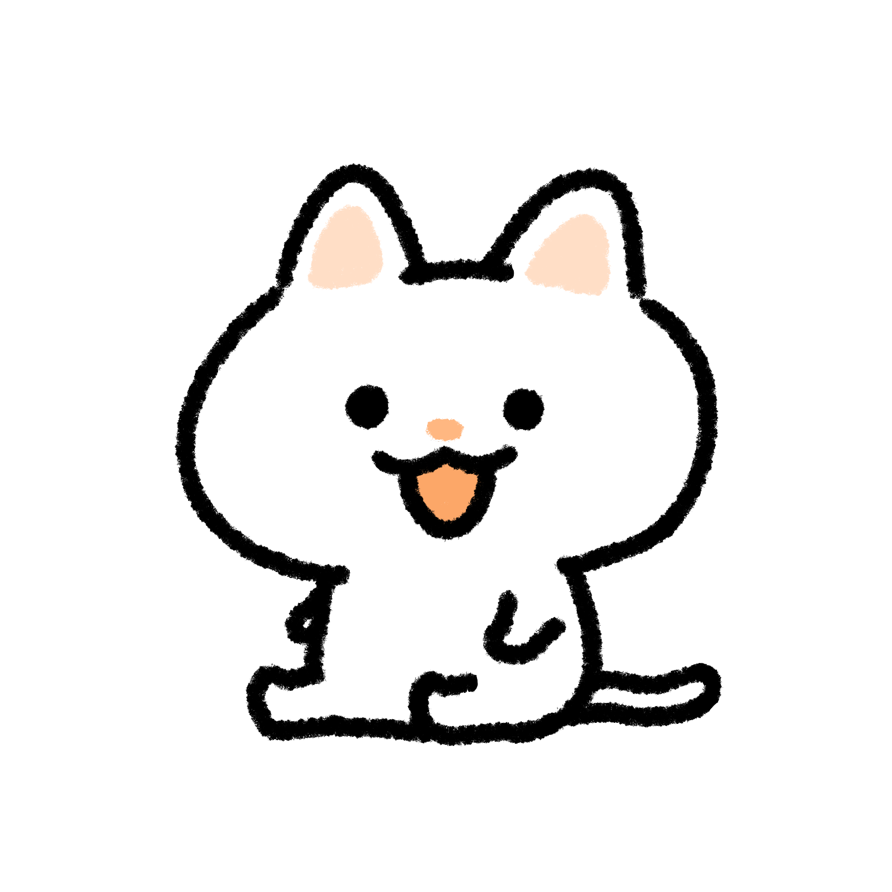

...(いつも通りパソコンをやっている)

ねえねえ、ココツ。
ん？どうした？
今思ったんだけどさ、このアニメサイトってやつあるじゃん。

あ～！ありますね～！そんなサイト！
?_?(びっくりしてる)
あるね～～
これさどう考えてもアニメじゃないよね？小説のヒロインみたいな話し方だもん...
確かにそうですね...アニメってアニメーションの略ですし...
あのさ、これ名前変えたほうがいいよね？
確かに、アニメじゃないのにアニメサイトってちょっと変ですもんね...
このサイトの名前を今すぐにじゃくとココツのお話サイトっていう名前にしてほしい
お、おう...(名前ダサい...)
おい、聞こえてるぞ?
ココツ...彼の前では何も言わないほうがいいですよ...
じゃく君...すみませんでした。
許す！
よかったですね～。許してくれて。
あ、忘れてた！！名前のサイトを変えようよ！！
彼は「無理！」と言っていますよ
ちょっとまってくれ....
おねがい！ココツ！一生のお願い！これしてくれたら靴舐めたり何でもします！！
それはやめてください()
わかったよ。こうすればいい?
おお～。いいな～っておい！！！ただ後ろに(?)を付けただけじゃないか！
ココツがじゃくを睨み返す。
いや、なんで僕らが睨めれる必要があるの！？！？！？！？！？
もう好きにしていいじゃん！このアニメサイトは僕が作ったんだから！！！！
おい、何嘘ついてるんや。ココツ
う、うp主さん....?
あーあ。終わりましたね。ココツ！あとは頑張ってください！(走って逃げた)
さーて？ココツ君？汚話しようじゃないか？？
ひ、ひい！ごめんなさい！！！
どうしてこんなことになったんだ？
ぎゃあああああああああああああああああああああ！！！！
こうして、ココツは僕から逃げて行ったのであった...
みなさんへ
どうも！中3になったうp主だぜ☆。受験と部活大変だけど何とか頑張っていこうと思います！！ちなみに二代目のmysiteは間に合わないので、超延長しました。(定期テストとかもあるしね)。
なんていえばいいのだろうか...話すことがない
まあいいや！って言うことで今年もmysiteをよろしくお願いします！